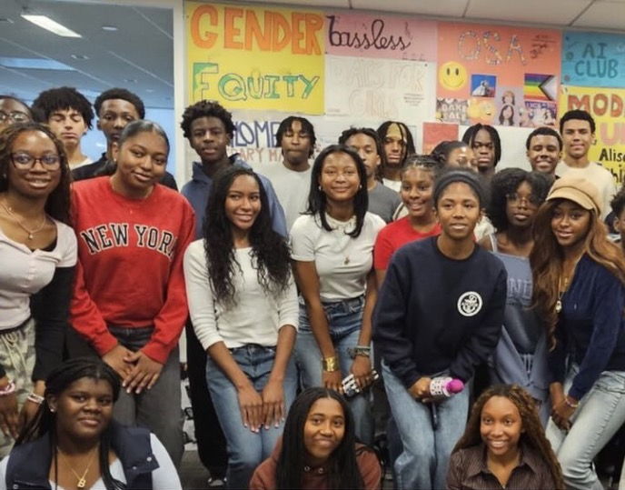
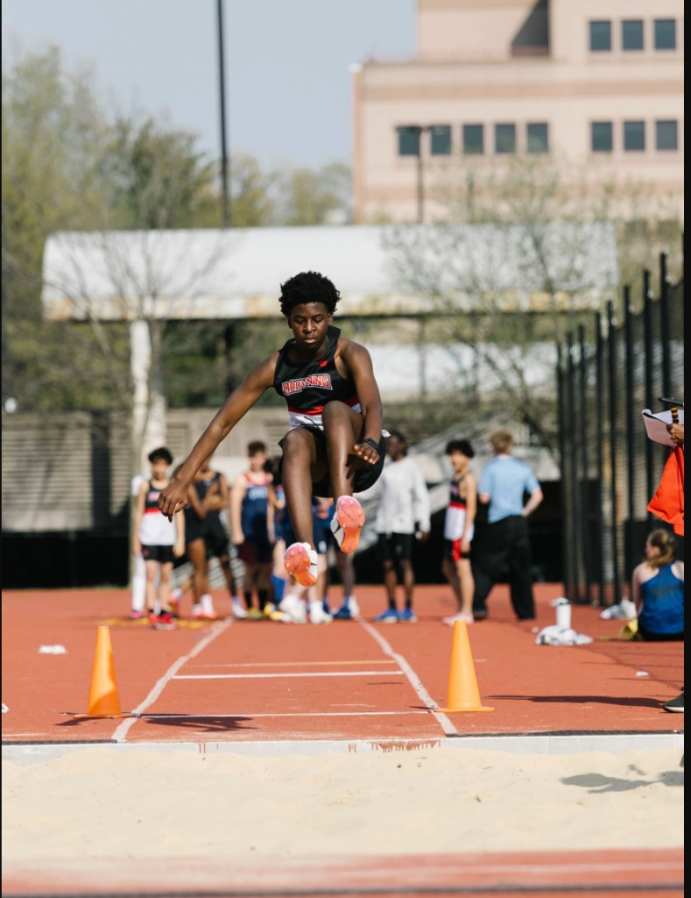

Pure HTML, CSS, and JS. Ready for GitHub Pages.
© 2026 Ninis. All Rights Reserved.
Hi, I am
Ninis Twumasi
Sophomore & CS Student at The Browning School
Welcome to my personal archive. This platform represents who I am, a 15-year-old student from Manhattan, NYC, doing my best to make an impact both in and out of the classroom.
Ninis Twumasi

Manhattan Student & Community Advocate
Welcome to My Website! This website is coded 100% by me and is a reflection of who I am, a 15-year-old student from Manhattan, NYC, doing my best to make an impact both in and out of the classroom. I'm currently a sophomore at The Browning School, where I stay busy between classes, soccer, track, and everything in between. Community is at the core of who I am. When asked about me in a few words to describe me, I am called kind-hearted, charismatic, persistent, driven, and determined. Whenever I am motivated about something, I always see it through. In addition, whenever someone needs me, I am always there for them.
As a student at Browning, I feel a real responsibility to use the opportunities I've been given to give back. Whether that's through founding Browning's Food Recovery Program with Grassroots Grocery, representing the Black Student Coalition across NYC, or showing up to local fundraisers and charity events, I believe giving back isn't something I do on the side; it's an important part of who I am.
Outside of activism, I'm an advocate at heart. I've spent years fighting for what I believe in and always helping people whenever they seek help. I personally find purpose in helping people with issues, no matter how small. Today, I spend my time writing creatively, playing soccer, spending time with friends, and staying up to date with world issues today and what we can do to help.
Hobbies & Interests
Soccer, Creative Writing, Track, Public Speaking, Community Activism
Core Career Goal
To leverage storytelling, community engagement, and logic to drive social advocacy.
Resume & Experience
Sophomore at The Browning School, Dedicated to academic excellence and leadership.

Black Student Coalition Rep
Serve as Browning’s representative to the Black Student Coalition NYC, an organization connecting Black students across New York City. Promote Black culture, encourage meaningful discussions, and help build a supportive and empowering community among students.
JV Soccer Captain
JV Soccer Captain
Played competitive soccer for over six years, developing strong teamwork, communication, and leadership skills. Served as JV Captain, helping lead practices, motivate teammates, and promote collaboration on and off the field.

Varsity Track
Varsity Indoor/Outdoor Track
Competed in Varsity Track while focusing on discipline, perseverance, and personal growth. Worked toward improving performance, achieving personal records, and maintaining physical fitness through consistent training and competition.
Leadership
Soccer JV Captain
I played competitive soccer for over six years, developing strong teamwork, communication, and leadership skills. Served as JV Captain, helping lead practices, motivate teammates, and promote collaboration on and off the field.
Founder, Browning Food Recovery Program with Grassroots Grocery
Founded Browning’s Food Recovery Program in partnership with Grassroots Grocery to help combat food insecurity. Worked to redirect unused resources toward supporting communities in need and promoting service within the Browning community.
All-School Green Team Leadership
Helped lead environmental initiatives aimed at making Browning a more sustainable and environmentally conscious community. Organized fundraisers and promoted projects focused on environmental awareness and positive change within the school.
Class Representative
Represented my grade by advocating for student voices and communicating student concerns and ideas. Strengthened my leadership, public speaking, and self-advocacy skills while learning how to handle feedback and rejection constructively.
Middle School Student Council
Participated in Student Council to help represent the middle school community and contribute to school improvement efforts. Assisted with community service initiatives, student events, and projects designed to strengthen school spirit and engagement.
Education
The Browning School
CAD DesignSophomore (Class of 2028)
Browning Enrollment: 2021–2026
Excelling in STEM curricula, computer architecture, and logic models.
Experience
Camp Counselor
Team LeadershipCamp KenMont and KenWood
Summer 2026
I will be serving as a Camp Counselor at Camp KenMont and KenWood from July 19th to August 16th. Having attended the camp for the past two years, I look forward to giving back to the community that has positively impacted me. This experience will allow me to develop leadership, responsibility, and mentorship skills while working closely with children in a team-oriented environment.
Academic Clubs
-
Grytte, Upper School Newspaper
VisitJournalismGrytte is the upper school newspaper where I develop my skills in writing about my community and informing people of major events happening at my school.
-
Time for Kids Reporter (2023–2024)
ArticlesJournalismContributed articles focused on current events and topics I am passionate about in order to spread awareness and inform readers. Strengthened my writing, journalism, and communication skills through reporting and storytelling.
-
Mock Trial (2023–2026)
Public SpeakingParticipated in Browning's Mock Trial program, developing skills in public speaking, reasoning, advocacy, and critical thinking under pressure.
-
Debate Team (2024–2026)
Public SpeakingCompeted in debates focused on argumentation, public speaking, and analytical reasoning. Improved my ability to think critically, communicate effectively, and defend positions on complex issues.
-
Urban Barcoding (2024–2025)
ResearchScientific Writing Research & Fact-CheckingParticipated in scientific research focused on biodiversity and environmental science through urban barcoding projects.
Competencies & Abilities
Click on any skill card below to view specific experience details and summaries!
Skill Overview
Click a card to load information.
Tech & Creative
Computational thinking, loop controls, variables, logic structures, and algorithm design basics.
Designing clean, responsive layout frameworks with Tailwind CSS utility integration.
Precise 3D mechanical drafting, sketch constraints, assemblies, and rapid 3D printing preparation.
Investigative reporting, storytelling, editing, and professional community journalism experience.
Academic & Speaking
Conversational fluency, grammar, cultural analysis, and reading up to French 3 level.
Persuasive presentation, trial advocacy, quick reasoning, and analytical debate techniques.
Primary source verification, data cross-referencing, academic research, and factual accuracy.
Published scientific writing highlighted inside the Urban Barcoding project.
Leadership & Community
Logistics planning, donation distribution, volunteer coordination, and green campaigns.
Group dynamics, athletic coaching, delegating tasks, conflict resolution, and youth mentorship.
Peer representation, consensus building, student lobbying, and coalition communications.
Get in Touch
Have a question or want to connect? Feel free to reach out.